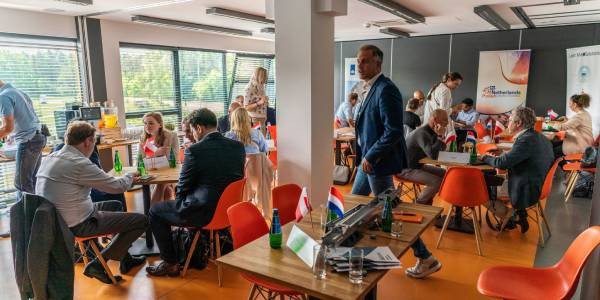

Webovio Design - A Journey of Creativity
EN:
The journey of Webovio Design began in the heart of Amsterdam. In 2005, a group of visionary designers came together with a passion for creativity and a drive to make a difference. Their goal was simple yet profound: to transform digital experiences through innovative design.
Early Years of Innovation
In the early years, our team focused on honing their skills and pushing the boundaries of design. We collaborated with startups and small businesses, helping them realize their digital potential. Our commitment to delivering cutting-edge solutions quickly earned us a reputation for excellence.
Expanding Horizons
As the digital landscape evolved, so did Webovio Design. We embraced new technologies, methodologies, and design trends. This evolution allowed us to take on more complex projects, working with larger enterprises and global brands.
Global Reach
By 2010, we had expanded our reach beyond the Netherlands. Our work had touched clients in Europe, North America, and Asia. This global perspective enriched our design philosophy and broadened our creative horizons.
The Webovio Way
Throughout our journey, one thing remained constant: our commitment to client success. We believe that design should not just be visually stunning but also functional and impactful. The Webovio Way is about understanding our clients' unique needs and crafting tailored solutions that drive results.
Designing the Future
Today, Webovio Design is at the forefront of digital design innovation. Our team continues to push the envelope, creating immersive and engaging digital experiences. We're proud to have worked with clients from various industries, helping them thrive in the digital age.
Future Forward
The future holds endless possibilities, and Webovio Design is ready to embrace them. We remain dedicated to our core values of creativity, innovation, and client-centricity. With each project, we strive to leave a mark on the digital world.
Join Us on Our Journey
As we look back on our remarkable journey, we invite you to join us on the path forward. Let's create the future of design together.
Thank you for being a part of the Webovio Design story!
NL: Webovio Design - Een Creatieve Reis
De reis van Webovio Design begon in het hart van Amsterdam. In 2005 bundelde een groep visionaire ontwerpers hun krachten met een passie voor creativiteit en de drive om het verschil te maken. Hun doel was eenvoudig maar diepgaand: digitale ervaringen transformeren door innovatief ontwerp.
Vroege Jaren van Innovatie
In de beginjaren richtte ons team zich op het perfectioneren van hun vaardigheden en het verleggen van de grenzen van ontwerp. We werkten samen met startups en kleine bedrijven, om hen te helpen hun digitale potentieel te realiseren. Onze toewijding om toonaangevende oplossingen te leveren, leverde al snel een reputatie op van uitmuntendheid.
Horizonnen Verkennen
Naarmate het digitale landschap evolueerde, deed Webovio Design dat ook. We omarmden nieuwe technologieën, methodologieën en ontwerptrends. Deze evolutie stelde ons in staat om complexere projecten aan te nemen en samen te werken met grotere ondernemingen en wereldwijde merken.
Wereldwijde Impact
Tegen 2010 hadden we ons bereik uitgebreid buiten Nederland. Ons werk had klanten in Europa, Noord-Amerika en Azië bereikt. Deze wereldwijde perspectieven verrijkten onze ontwerpfilosofie en verbreedden onze creatieve horizon.
De Webovio Manier
Gedurende onze reis bleef één ding constant: onze toewijding aan het succes van de klant. We geloven dat ontwerp niet alleen visueel verbluffend moet zijn, maar ook functioneel en impactvol. De Webovio Manier draait om het begrijpen van de unieke behoeften van onze klanten en het creëren van op maat gemaakte oplossingen die resultaten opleveren.
De Toekomst Vormgeven
Vandaag staat Webovio Design aan de top van de digitale ontwerpinnovatie. Ons team blijft de grenzen verleggen door meeslepende en boeiende digitale ervaringen te creëren. We zijn er trots op dat we hebben samengewerkt met klanten uit verschillende sectoren, om hen te helpen gedijen in het digitale tijdperk.
Vooruitblik
De toekomst biedt eindeloze mogelijkheden en Webovio Design is er klaar voor om deze te omarmen. We blijven toegewijd aan onze kernwaarden van creativiteit, innovatie en klantgerichtheid. Bij elk project streven we ernaar om een stempel te drukken op de digitale wereld.
Sluit u aan bij Onze Reis
Terwijl we terugkijken op onze opmerkelijke reis, nodigen we u uit om met ons mee te gaan op de weg vooruit. Laten we samen de toekomst van ontwerp creëren.
Dank u voor uw deelname aan het verhaal van Webovio Design!
